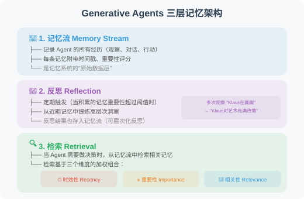
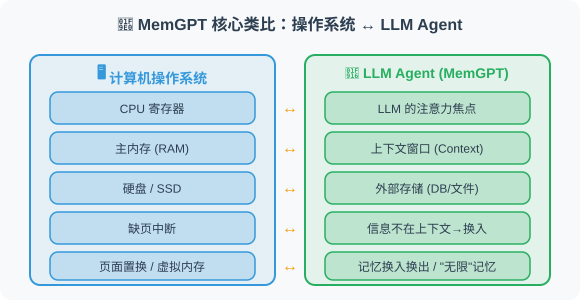
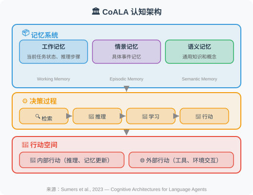

5.6 论文解读：记忆系统前沿进展
📖 "记忆不只是存储，更是理解和推理的基础。"
Agent 记忆系统的研究正在快速发展，以下是最有影响力的几项工作。
Generative Agents：虚拟小镇中的记忆里程碑
论文：Generative Agents: Interactive Simulacra of Human Behavior
作者：Park et al., Stanford University & Google Research
发表：2023 | arXiv:2304.03442
核心问题
如何让 AI Agent 像人类一样拥有丰富的内心世界——记住过去的经历、反思这些经历的意义、并据此制定未来的计划？
实验设计
研究者构建了一个名为 Smallville 的虚拟小镇，25 个 AI 居民（Generative Agents）在其中自主生活。每个居民有自己的身份背景（名字、职业、人际关系），并在小镇中自由活动——去咖啡店、上班、与其他居民交谈、参加活动。
令人惊叹的是，这些 Agent 展现出了许多涌现行为：
- 一个 Agent 计划举办情人节派对，自发地邀请其他 Agent
- Agent 之间形成了友谊和社交圈
- Agent 会基于过去的互动调整对其他 Agent 的态度
记忆架构（核心贡献）
Generative Agents 的记忆系统是其最重要的技术创新，包含三个层次：

对 Agent 开发的启示
- "观察-反思-检索"框架是设计 Agent 记忆系统的黄金范式。大多数后续研究都借鉴了这一框架
- 重要性评分的思想——不是所有信息都值得记忆，需要有选择性
- 多维度检索优于单维度检索（纯时间序列或纯语义相似度都不够）
- 反思机制让 Agent 能从具体经历中提炼出抽象知识——这是"智能"的关键标志
MemGPT：操作系统式的记忆管理
论文：MemGPT: Towards LLMs as Operating Systems
作者：Packer et al., UC Berkeley
发表：2023 | arXiv:2310.08560
核心问题
LLM 的上下文窗口是有限的（即使 128K Token 也会耗尽）。当对话足够长或需要处理大量信息时，如何管理这个有限的"内存"？
核心类比：LLM = 计算机
MemGPT 最精妙的洞察是将 LLM 的上下文窗口类比为计算机的内存管理：

方法原理
MemGPT 将上下文窗口分为两个区域：
- 主上下文（Main Context）：类似 RAM，放当前最需要的信息（系统提示、近期对话、工作记忆）
- 外部存储（External Storage）：类似硬盘，存放完整的对话历史、文档、知识等
关键机制：
- 自我编辑函数：Agent 可以调用
core_memory_append()、core_memory_replace()等函数来主动管理自己的记忆 - 自动换入换出：当 Agent 需要的信息不在主上下文中时，系统自动从外部存储中检索并"换入"
- 暂停与恢复：Agent 可以暂停当前对话，去外部存储中搜索信息，然后恢复
关键发现
- 理论上无限的记忆：通过分层存储，LLM 可以突破上下文窗口的限制
- 主动记忆管理：Agent 自己决定哪些信息值得保留在"工作记忆"中
- 多会话连续性：跨会话的信息可以通过外部存储持续保存
对 Agent 开发的启示
MemGPT 的架构思想在今天的 Agent 开发中非常实用：
- 分层记忆设计：不要把所有信息都塞进 Prompt，而是分层管理
- Agent 自管理记忆：给 Agent 提供记忆管理工具（如本书 5.5 节的实战项目）
- 参考 mem0 等开源方案：mem0 是 MemGPT 理念的开源实现
MemoryBank：遗忘曲线启发的记忆管理
论文：MemoryBank: Enhancing Large Language Models with Long-Term Memory
作者：Zhong et al.
发表：2023 | arXiv:2305.10250
核心问题
现有的记忆系统要么"全部记住"（存储爆炸），要么"只记最新"（遗忘重要信息）。如何模拟人类真实的记忆行为——重要的、经常回忆的记忆被巩固，不重要的、不常回忆的记忆逐渐淡化？
方法原理
MemoryBank 的核心创新是引入了艾宾浩斯遗忘曲线（Ebbinghaus Forgetting Curve）：
记忆强度 = 初始强度 × e^(-t/S)
其中：
- t = 自上次访问以来的时间
- S = 记忆稳定性（取决于重要性和回顾次数）
实际效果：
- 经常被访问的记忆 → S 增大 → 衰减更慢 → 被"巩固"
- 很久不访问的记忆 → 强度不断衰减 → 最终被"遗忘"（或归档）
- 重要的记忆 → 初始 S 更大 → 即使不常访问也能保持较长时间
记忆操作
MemoryBank 支持三种核心操作：
- 记忆写入：新信息带初始强度存入
- 记忆回忆：检索时更新访问时间，增加稳定性
- 记忆遗忘：定期扫描，强度低于阈值的记忆被移至"归档区"
对 Agent 开发的启示
- 自然的信息管理：比起手动设置"保留最近 N 条"，遗忘曲线更智能
- 用户画像随时间演进：用户的偏好可能会变化，旧偏好自然衰减
- 存储效率：自动淘汰不再需要的信息，控制存储成本
CoALA：Agent 认知架构的统一框架
论文：Cognitive Architectures for Language Agents (CoALA)
作者：Sumers et al.
发表：2023 | arXiv:2309.02427
核心问题
Agent 的记忆系统、推理系统、行动系统之间是什么关系？是否存在一个统一的认知架构来组织这些组件？
CoALA 框架
CoALA 借鉴了认知科学中的认知架构理论（如 ACT-R、SOAR），提出了一个适用于 LLM Agent 的统一框架：

核心贡献
- 统一分类：将现有的 Agent 系统按认知架构的组件进行分类和比较
- 记忆三分法：工作记忆 / 情景记忆 / 语义记忆 的划分比传统的"短期/长期"划分更精细
- 设计指导：为 Agent 开发者提供了一个"清单"——在设计 Agent 时需要考虑哪些认知组件
对 Agent 开发的启示
CoALA 框架帮助我们更系统地思考 Agent 设计：
- 情景记忆 ≠ 语义记忆：前者存储"我经历了什么"，后者存储"我知道什么"。两者的检索策略不同
- 工作记忆是推理的基础：复杂推理需要 Scratchpad（详见 5.4 节）
- 学习循环：Agent 不仅要使用记忆，还要从经验中学习并更新记忆
HippoRAG：受海马体启发的长时记忆
论文：HippoRAG: Neurobiologically Inspired Long-Term Memory for Large Language Models
作者：Gutiérrez et al., 俄亥俄州立大学 NLP Group
发表：2024 | NeurIPS 2024 | arXiv:2405.14831
核心问题
人类大脑的海马体能够高效地整合新信息并与已有知识关联，而现有的 RAG 系统只是简单地"检索最相似的片段"——缺乏对知识之间关联关系的建模。
方法原理
HippoRAG 模拟了海马体的记忆索引理论（Complementary Learning Systems）：
传统 RAG：
文档 → 分块 → 向量化 → 检索最相似片段 → 生成回答
问题：片段之间没有关联，无法跨文档推理
HippoRAG：
离线索引阶段（模拟皮层学习）：
文档 → LLM 提取知识三元组 (实体, 关系, 实体)
→ 构建知识图谱（类似海马体的索引结构）
在线检索阶段（模拟海马体检索）：
查询 → 提取查询中的实体
→ 在知识图谱中找到相关实体
→ 通过个性化 PageRank 沿图扩展
→ 定位到最相关的原始文档片段
→ 生成回答
关键发现
- 知识图谱作为索引：比纯向量检索更擅长处理需要跨文档关联推理的问题
- 持续学习：新知识可以增量添加到图中，而不需要重新索引所有文档
- 在多跳问答任务上显著优于标准 RAG：在 MuSiQue 等基准上提升 20%+
对 Agent 开发的启示
HippoRAG 为 Agent 的长期记忆提供了一个新范式——用知识图谱作为记忆的索引层，向量数据库作为原始内容的存储层，两者协作实现高质量的记忆检索。这与 CoALA 框架中"语义记忆"的概念高度吻合。
Zep：时序知识图谱驱动的 Agent 记忆
论文：Zep: A Temporal Knowledge Graph Architecture for Agent Memory
作者：Rasmussen et al.
发表：2025 | arXiv:2501.13956
核心问题
现有的 Agent 记忆系统大多忽略了时间维度——信息何时被记录、何时过期、不同时间点的信息如何演变。但在实际应用中，时间信息至关重要：
例子：用户偏好的演变
2025年1月："用户喜欢用 Python"
2025年6月："用户开始转向 Rust"
2025年12月："用户现在主要用 Rust"
没有时间建模 → Agent 不知道该推荐哪种语言
有时间建模 → Agent 知道用户最新偏好是 Rust
方法原理
Zep 将 Agent 的记忆组织为时序知识图谱（Temporal Knowledge Graph）：
核心数据结构：
(实体, 关系, 实体, 时间戳, 有效期)
例如：
(用户A, 偏好语言, Python, 2025-01, 2025-05)
(用户A, 偏好语言, Rust, 2025-06, 当前)
(用户A, 项目, 聊天机器人, 2025-03, 2025-08)
检索时：
1. 语义相关性（图结构遍历）
2. 时间相关性（优先返回最新、仍有效的记忆）
3. 情景上下文（关联同一时期的其他记忆）
对 Agent 开发的启示
- 时间感知是长期记忆的必要条件：特别是在个人助手、客户服务等场景中
- 知识图谱是记忆组织的理想结构：比纯向量列表更能表达实体间的复杂关系
- Zep 已开源并提供 Python SDK，可以直接集成到 LangChain / LangGraph 项目中
论文对比与发展脉络
| 维度 | Generative Agents | MemGPT | MemoryBank | CoALA | HippoRAG | Zep |
|---|---|---|---|---|---|---|
| 年份 | 2023 | 2023 | 2023 | 2023 | 2024 | 2025 |
| 核心创新 | 观察-反思-检索框架 | OS 式分层存储 | 遗忘曲线记忆管理 | 统一认知架构 | 海马体索引理论 | 时序知识图谱 |
| 记忆类型 | 记忆流 + 反思 | 主上下文 + 外部存储 | 遗忘曲线驱动 | 工作/情景/语义 | 知识图谱索引 | 时序图 + 情景 |
| 特色 | 反思机制 | 自我编辑内存 | 自然记忆衰减 | 理论框架 | 跨文档关联 | 时间感知 |
| 适用场景 | 社会模拟 | 长对话 | 用户画像 | 系统设计 | 知识密集任务 | 个人助理 |
发展脉络：
Generative Agents (建立了记忆系统的基本范式)
↓
MemGPT (解决"上下文窗口有限"的工程问题)
↓
MemoryBank (引入认知科学中的遗忘机制)
↓
CoALA (提供统一的理论框架)
↓
HippoRAG (用知识图谱作为记忆索引层, NeurIPS 2024)
↓
Zep + mem0 (时序图谱 + 工业级记忆方案, 2025)
💡 前沿趋势（2025-2026）：记忆系统正在从"被动存储"向"主动组织"演进，两大关键趋势：① 知识图谱成为记忆的核心：HippoRAG、Zep、mem0 都采用了图结构来组织记忆，相比纯向量存储能更好地表达实体关系和支持多跳推理；② 时间感知记忆：Agent 需要理解"什么时候知道了什么"、"哪些信息已过时"，Zep 的时序知识图谱和 MemoryBank 的遗忘曲线代表了两种互补的时间建模方案。mem0 作为开源记忆层方案已获得广泛采用，支持自动记忆提取、冲突检测和图结构记忆。
返回：第5章 记忆系统